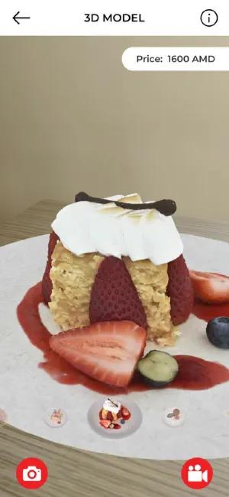

Teardown 17 / 17
AR 3D菜单（3DAR餐厅菜单）

用户
特色餐厅、网红餐饮门店；追求新奇体验的食客
场景
顾客点餐环节，门店吸引客流，增加用餐仪式感
当前方案痛点
纸质菜单、电子图片菜单都是二维静态图片，很难直观感受菜品样貌；菜单图片容易修图过度，实物落差大；普通菜单很难制造记忆点，不容易引发顾客拍照传播
创意方案
平板AR菜单，扫描餐盘位置，直接在桌面上投射出1:1大小的3D菜品模型。顾客可以直观看到甜品、菜肴的真实大小、造型，沉浸式预览菜品效果
核心价值
把平面图片升级为等比例3D实物预览，降低顾客想象成本；新奇的AR交互，打造门店差异化亮点，激发顾客打卡发社交平台，自带引流效果
方案短板与边界
硬件、开发成本高；需要平板设备，维护麻烦；环境光线会影响AR识别效果；上菜速度慢的门店容易造成期待落差
底层设计思想
把静态信息载体升级为空间可视化交互；在下单前，给用户实物级预览，弥补二维图文信息缺失的空间感知
同思想延伸案例
- AR家具预览（宜家AR摆放家具）
- AR试妆、AR试鞋
- 楼盘AR沙盘
AI 机会迁移
当图文信息不足以让用户感知产品真实形态时，用AR/3D空间渲染，在购买前还原实物尺寸与外观，减少信息差，同时增加交互趣味性，打造产品差异化亮点